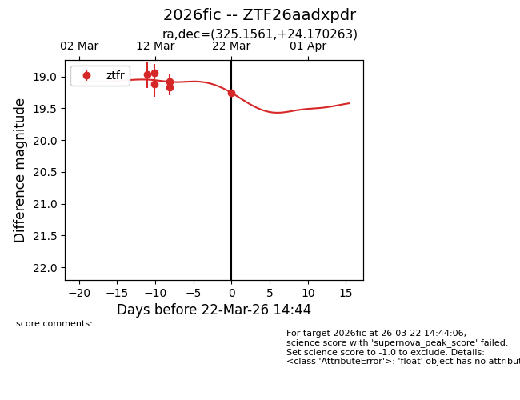
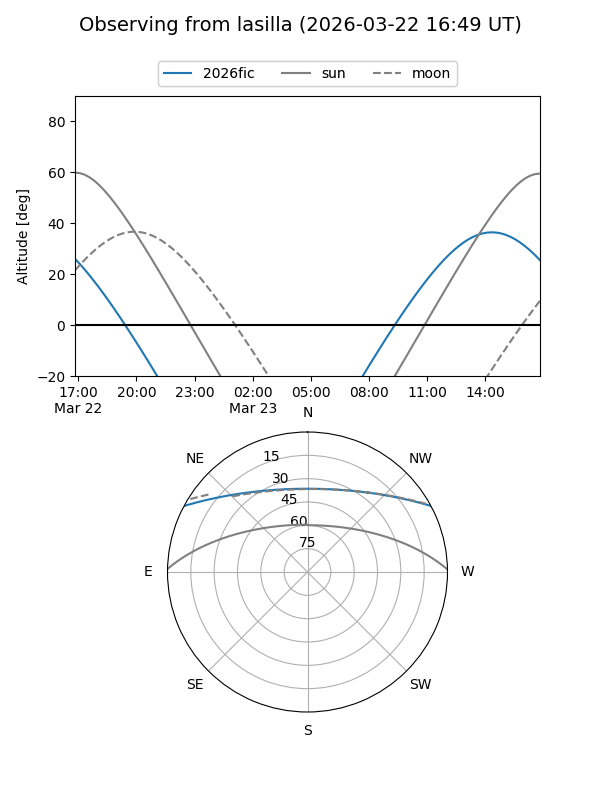
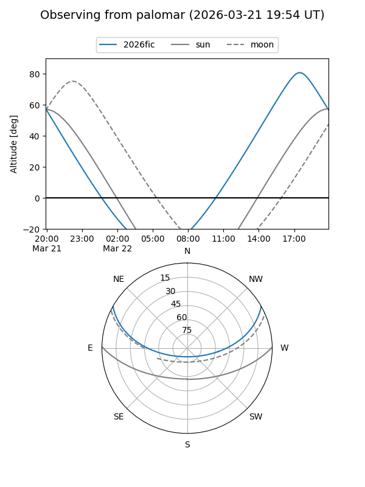
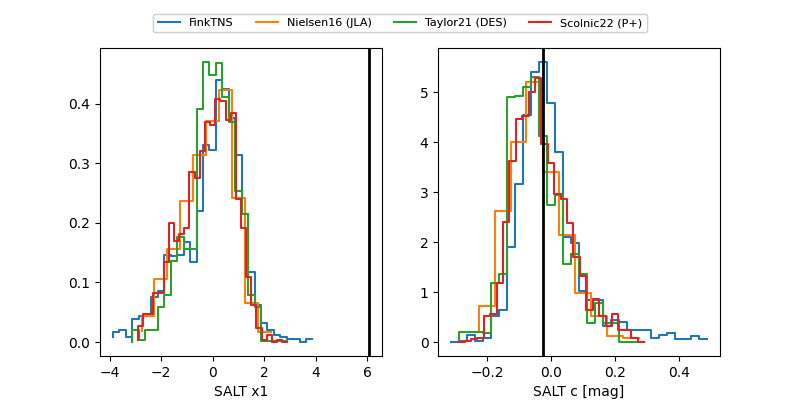

2026fic
Target 2026fic at 2026-03-22 14:46
Aliases and brokers:
FINK: link
Lasair: link
ALeRCE: link
TNS: link
YSE: link
alt names
ZTF26aadxpdr (ztf,fink_ztf)
2026fic (tns,yse)
Coordinates:
equatorial (ra, dec) = 325.1561,+24.17026
equatorial (HMS+DMS) = 21:40:37.46,+24:10:12.95
galactic (l, b) = (76.6092,-21.08328)
Flags:
Photometry:
last ztfr=19.25
6 ztfr detections
Lightcurve

Visibility


Additional plots
